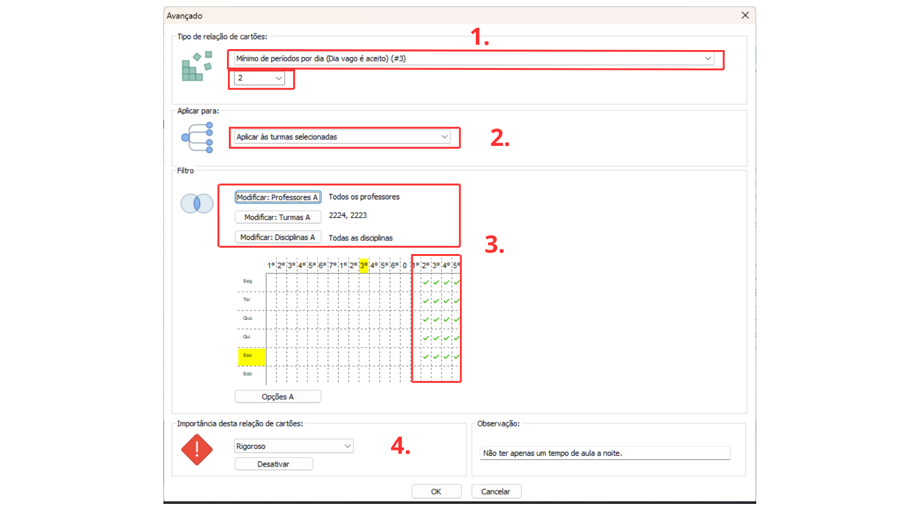

Detalhes do post:
Mínimo de duas Aulas Diárias para Turmas do Período Noturno:
Descrição:As turmas que têm aulas no período noturno devem ter no mínimo 2 tempos de aula no dia
Para resolver esse tipo de situação devemos restringir a colocação dos cartões das aulas usando as relações entre cartões avançados.

1- Selecione o tipo de restrição “Mínimo de períodos por dia (#3)”, na caixa de texto logo abaixo selecionar o número mínimo de aulas que a turma deve ter no dia.
2- Selecione a opção “Aplicar às turmas selecionadas”.
3- Utilize os filtros “Modificar Professores” e “Modificar Disciplinas” para aplicar a todos os professores e disciplinas das turmas especificadas; Utilize o filtro “Modificar Turmas” para selecionar aquelas turmas que a restrição deve afetar .
Selecione no quadro de horários os dias de aulas no período noturno ( Matutino ou Vespertino) em que o software deve alocar ao menos N períodos de aula em um dia ( N = número mínimo especificado no passo 1), portanto para que as turmas selecionadas tenham aula a noite algum dia da semana, este dia obrigatoriamente terá ao menos N períodos de aula ou mais.
4- Selecione a importância da Restrição, entre: baixa, normal, alta, rigoroso ou otimizar; de acordo com a importância a ser atribuída a essa relação na instituição.
Também escreva uma observação que facilite a identificação da restrição e explique seu objetivo.
Clique em “ok” no canto inferior para salvar a relação.